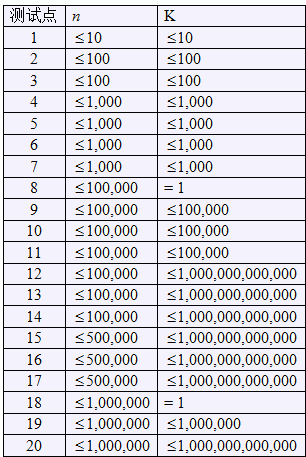

输入为标准输入。第一行为两个正整数n和K，代表的东西在题目描述中已经叙述。接下来一行为n个字符，代表从左到右女生拿的牌子上写的字母。
艾利斯顿商学院篮球队要参加一年一度的市篮球比赛了。拉拉队是篮球比赛的一个看点，好的拉拉队往往能帮助球队增加士气，赢得最终的比赛。所以作为拉拉队队长的楚雨荨同学知道，帮助篮球队训练好拉拉队有多么的重要。拉拉队的选拔工作已经结束，在雨荨和校长的挑选下，n位集优秀的身材、舞技于一体的美女从众多报名的女生中脱颖而出。这些女生将随着篮球队的小伙子们一起，和对手抗衡，为艾利斯顿篮球队加油助威。一个阳光明媚的早晨，雨荨带领拉拉队的队员们开始了排练。n个女生从左到右排成一行，每个人手中都举了一个写有26个小写字母中的某一个的牌子，在比赛的时候挥舞，为小伙子们呐喊、加油。雨荨发现，如果连续的一段女生，有奇数个，并且他们手中的牌子所写的字母，从左到右和从右到左读起来一样，那么这一段女生就被称作和谐小群体。现在雨荨想找出所有和谐小群体，并且按照女生的个数降序排序之后，前K个和谐小群体的女生个数的乘积是多少。由于答案可能很大，雨荨只要你告诉她，答案除以19930726的余数是多少就行了。
输入为标准输入。第一行为两个正整数n和K，代表的东西在题目描述中已经叙述。接下来一行为n个字符，代表从左到右女生拿的牌子上写的字母。
输出为标准输出。输出一个整数，代表题目描述中所写的乘积除以19930726的余数，如果总的和谐小群体个数小于K，输出一个整数-1。
5 3
ababa
45
【样例说明】
和谐小群体女生所拿牌子上写的字母从左到右按照女生个数降序排序后为ababa, aba, aba, bab, a, a, a, b, b，前三个长度的乘积为。总共20个测试点，数据范围满足： 